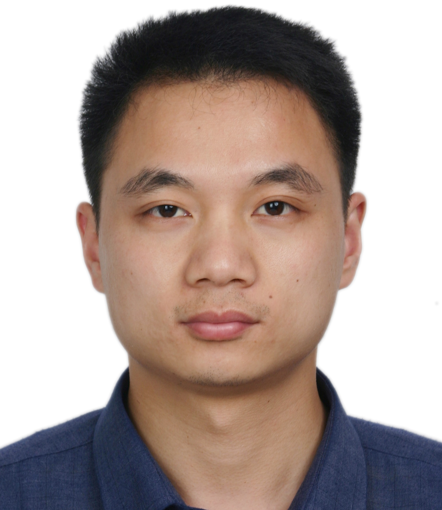
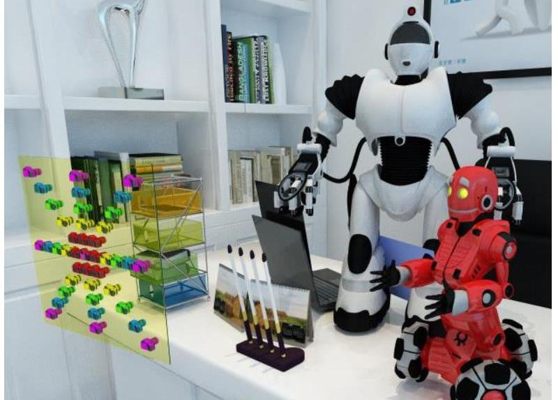

Jungang Yang (杨俊刚)
Professor
Research Gate |
Github |
Google Scholar
National University of Defense Technology (NUDT)
Email: yangjungang@nudt.edu.cn
Brief Bio
Jungang Yang is a professor at the college of Electronic Science and Technology, National University of Defense Technology (NUDT).
He received his PhD in Information and Communication Engineering in 2013 from NUDT.
From 2010 to 2011, he worked as a visiting PhD in the University of Edinburgh, supervised by Professor John Thompson.
The current directions of interest include
light field imaging, image super-resolution and target detection.
News
2024.03 | Our paper "Real-World Light Field Image Super-Resolution via Degradation Modulation" is accepted by IEEE TNNLS.
2024.03 |Our paper "MTU-Net: Multilevel TransUNet for Space-Based Infrared Tiny Ship Detection" is selected as Highly Cited Papers in the latest issue of ESI Index.
2024.03 | Receive the honour of Distinguished Young Scholar of Hunan Province, China.
2023.10 | Our paper "Representative Coefficient Total Variation for Efficient Infrared Small Target Detection" and "RepISD-Net Learning Efficient Infrared Small-target Detection Network via Structural Re-parameterization" are accepted by IEEE TGRS.
2023.10 | Receive the honour of World Top 2% Scientist from Elsevier-Stanford.
2023.07 | Our paper "Learning Non-Local Spatial-Angular Correlation for Light Field Image Super-Resolution" is accepted by ICCV 2023.
2023.07 | Our paper "Infrared Small Target Detection via Nonconvex Tensor Tucker Decomposition With Factor Prior" is accepted by IEEE TGRS.
2023.06 | Our paper "Infrared Dim and Small Target Detection via Multiple Subspace Learning and Spatial-Temporal Patch-Tensor Model" is selected as 1% Highly Cited Papers in the latest issue of ESI Index.
2023.06 | Our paper "Nonconvex Tensor Low-Rank Approximation for Infrared Small Target Detection" is selected as 1% Highly Cited Papers in the latest issue of ESI Index.
2023.02 | Our paper "Disentangling Light Fields for Super-Resolution and Disparity Estimation" is selected as 1% Highly Cited Papers in the latest issue of ESI Index.
2023.01 | We are organizing NTIRE Stereo Image SR Challenge and NTIRE LF Image SR Challenge at CVPR 2023.
2022.12 | Our paper "MTU-Net: Multilevel TransUNet for Space-Based Infrared Tiny Ship Detection" is accepted by IEEE TGRS.
2022.11 | Our paper "Combining Deep Denoiser and Low-rank Priors for Infrared Small Target Detection" is accepted by Pattern Recognition.
2022.06 | Our Paper "Occlusion-Aware Cost Constructor for Light Field Depth Estimation" is accepted by CVPR 2022.
2022.02 | Our paper "Disentangling Light Fields for Super-Resolution and Disparity Estimation" is accepted by IEEE TPAMI.
2022.01 | We are organizing NTIRE Stereo Image Super-Resolution Challenge at CVPR 2022.
2021.11 | Our Paper "Nonconvex Tensor Low-Rank Approximation for Infrared Small Target Detection" is accepted by IEEE TGRS.
2021.10 | Our paper "Spatial-Angular Attention Network for Light Field Reconstruction" is accepted by IEEE TIP.
2021.07 | Our paper "Learning a Single Network for Scale-Arbitrary Super-Resolution" is accepted to ICCV 2021.
2021.03 | Our paper "Unsupervised Degradation Representation Learning for Blind Super-Resolution" is accepted to CVPR 2021.
2020.11 | Our paper "Light Field Image Super-Resolution Using Deformable Convolution" is accepted by IEEE TIP.
2020.09 | Our paper "Parallax Attention for Unsupervised Stereo Correspondence Learning" is accepted by IEEE TPAMI.
2020.07 | Our paper "Spatial-Angular Interaction for Light Field Image Super-Resolution" is accepted to ECCV 2020.
2019.12 | Our paper "DeOccNet: Learning to See Through Foreground Occlusions in Light Fields" is accepted to WACV 2020.
2019.03 | A large-scale dataset for stereo image super-resolution is available online at Flickr1024.
2019.02 | Our paper "Learning Parallax Attention for Stereo Image Super-Resolution" is accepted to CVPR 2019.
2017.10 | Our paper "An attitude jitter correction method for multispectral parallax imagery based on compressive sensing" is accepted by IEEE TGRS Letters
2014.09 | Our paper "Compressed sensing radar imaging with compensation of observation position error" is accepted by IEEE TGRS.
2014.07 | Our paper "Sparse MIMO array forward-looking GPR imaging based on compressed sensing in clutter environment" is accepted by IEEE TGRS.
2013.07 | Our paper "Segmented reconstruction for compressed sensing SAR imaging" is accepted by IEEE TGRS.
2013.02 | Our paper "Random-frequency SAR imaging based on compressed sensing" is accepted by IEEE TGRS.
2012.05 | Our paper "Synthetic aperture radar imaging using stepped frequency waveform" is accepted by IEEE TGRS.
2011.12 | Our paper "Low-frequency ultra-wideband synthetic aperture radar ground moving target imaging" is accepted by IET Radar, Sonar & Navigation
2011.07 | Our paper "New approach for SAR imaging of ground moving targets based on a keystone transform" is accepted by IEEE TGRS Letters
2011.03 | Our paper "An interpolated phase adjustment by contrast enhancement algorithm for SAR" is accepted by IEEE TGRS Letters
2024.03 |Our paper "MTU-Net: Multilevel TransUNet for Space-Based Infrared Tiny Ship Detection" is selected as Highly Cited Papers in the latest issue of ESI Index.
2024.03 | Receive the honour of Distinguished Young Scholar of Hunan Province, China.
2023.10 | Our paper "Representative Coefficient Total Variation for Efficient Infrared Small Target Detection" and "RepISD-Net Learning Efficient Infrared Small-target Detection Network via Structural Re-parameterization" are accepted by IEEE TGRS.
2023.10 | Receive the honour of World Top 2% Scientist from Elsevier-Stanford.
2023.07 | Our paper "Learning Non-Local Spatial-Angular Correlation for Light Field Image Super-Resolution" is accepted by ICCV 2023.
2023.07 | Our paper "Infrared Small Target Detection via Nonconvex Tensor Tucker Decomposition With Factor Prior" is accepted by IEEE TGRS.
2023.06 | Our paper "Infrared Dim and Small Target Detection via Multiple Subspace Learning and Spatial-Temporal Patch-Tensor Model" is selected as 1% Highly Cited Papers in the latest issue of ESI Index.
2023.06 | Our paper "Nonconvex Tensor Low-Rank Approximation for Infrared Small Target Detection" is selected as 1% Highly Cited Papers in the latest issue of ESI Index.
2023.02 | Our paper "Disentangling Light Fields for Super-Resolution and Disparity Estimation" is selected as 1% Highly Cited Papers in the latest issue of ESI Index.
2023.01 | We are organizing NTIRE Stereo Image SR Challenge and NTIRE LF Image SR Challenge at CVPR 2023.
2022.12 | Our paper "MTU-Net: Multilevel TransUNet for Space-Based Infrared Tiny Ship Detection" is accepted by IEEE TGRS.
2022.11 | Our paper "Combining Deep Denoiser and Low-rank Priors for Infrared Small Target Detection" is accepted by Pattern Recognition.
2022.06 | Our Paper "Occlusion-Aware Cost Constructor for Light Field Depth Estimation" is accepted by CVPR 2022.
2022.02 | Our paper "Disentangling Light Fields for Super-Resolution and Disparity Estimation" is accepted by IEEE TPAMI.
2022.01 | We are organizing NTIRE Stereo Image Super-Resolution Challenge at CVPR 2022.
2021.11 | Our Paper "Nonconvex Tensor Low-Rank Approximation for Infrared Small Target Detection" is accepted by IEEE TGRS.
2021.10 | Our paper "Spatial-Angular Attention Network for Light Field Reconstruction" is accepted by IEEE TIP.
2021.07 | Our paper "Learning a Single Network for Scale-Arbitrary Super-Resolution" is accepted to ICCV 2021.
2021.03 | Our paper "Unsupervised Degradation Representation Learning for Blind Super-Resolution" is accepted to CVPR 2021.
2020.11 | Our paper "Light Field Image Super-Resolution Using Deformable Convolution" is accepted by IEEE TIP.
2020.09 | Our paper "Parallax Attention for Unsupervised Stereo Correspondence Learning" is accepted by IEEE TPAMI.
2020.07 | Our paper "Spatial-Angular Interaction for Light Field Image Super-Resolution" is accepted to ECCV 2020.
2019.12 | Our paper "DeOccNet: Learning to See Through Foreground Occlusions in Light Fields" is accepted to WACV 2020.
2019.03 | A large-scale dataset for stereo image super-resolution is available online at Flickr1024.
2019.02 | Our paper "Learning Parallax Attention for Stereo Image Super-Resolution" is accepted to CVPR 2019.
2017.10 | Our paper "An attitude jitter correction method for multispectral parallax imagery based on compressive sensing" is accepted by IEEE TGRS Letters
2014.09 | Our paper "Compressed sensing radar imaging with compensation of observation position error" is accepted by IEEE TGRS.
2014.07 | Our paper "Sparse MIMO array forward-looking GPR imaging based on compressed sensing in clutter environment" is accepted by IEEE TGRS.
2013.07 | Our paper "Segmented reconstruction for compressed sensing SAR imaging" is accepted by IEEE TGRS.
2013.02 | Our paper "Random-frequency SAR imaging based on compressed sensing" is accepted by IEEE TGRS.
2012.05 | Our paper "Synthetic aperture radar imaging using stepped frequency waveform" is accepted by IEEE TGRS.
2011.12 | Our paper "Low-frequency ultra-wideband synthetic aperture radar ground moving target imaging" is accepted by IET Radar, Sonar & Navigation
2011.07 | Our paper "New approach for SAR imaging of ground moving targets based on a keystone transform" is accepted by IEEE TGRS Letters
2011.03 | Our paper "An interpolated phase adjustment by contrast enhancement algorithm for SAR" is accepted by IEEE TGRS Letters
Publications --- 2024

Real-World Light Field Image Super-Resolution via Degradation Modulation
Yingqian Wang, Zhengyu Liang, Longguang Wang, Jungang Yang, Wei An, Yulan Guo
TNNLS, 2024.
Publications --- 2023

NTIRE 2023 Challenge on Light Field Image Super-Resolution: Dataset, Methods and Results
Yingqian Wang, Longguang Wang, Zhengyu Liang, Jungang Yang, Radu Timofte, Yulan Guo et al.
CVPRW, 2023.
Not All Patches Are Equal: Hierarchical Dataset Condensation for Single Image Super-Resolution
Qingtang Ding, Zhengyu Liang, Longguang Wang, Yingqian Wang, Jungang Yang
IEEE SPL, 2023.
| Paper
Publications --- 2022

Publications --- 2021
Unsupervised Degradation Representation Learning for Blind Super-Resolution
Longguang Wang, Yingqian Wang, Xiaoyu Dong, Qingyu Xu, Jungang Yang, Wei An, Yulan Guo
CVPR, 2021.
Learning a Single Network for Scale-Arbitrary Super-Resolution
Longguang Wang, Yingqian Wang, Zaiping Lin, Jungang Yang, Wei An, Yulan Guo
ICCV, 2021.
Publications --- 2020

Spatial-Angular Interaction for Light Field Image Super-Resolution
Yingqian Wang, Longguang Wang, Jungang Yang, Wei An, Jingyi Yu, Yulan Guo
ECCV, 2020.
DeOccNet: Learning to See Through Foreground Occlusions in Light Fields
Yingqian Wang, Tianhao Wu, Jungang Yang, Longguang Wang, Wei An, Yulan Guo
WACV, 2020.
Publications --- 2019

Academic Services
Awards & Honors
2024 | Distinguished Young Scholar of Hunan Province, China
2023 | World Top 2% Scientists of Elsevier-Stanford
2020 | Young Talents of Hunan Province, China
2020 | Young Innovative Talents in Science and Technology of Hunan Province, China
2020 | Second-class prize of National Science of Chinese Institute of Electronics
2017 | Outstanding Doctoral Dissertation Award of China Education Society of Electronics
2016 | Outstanding Doctoral Dissertation Award of Hunan Province, China
2016 | Young Talents of National University of Defense Technology
2016 | Youth Innovation Award of National University of Defense Technology
2012 | Doctoral Academic Novice Award, Ministry of Education
2023 | World Top 2% Scientists of Elsevier-Stanford
2020 | Young Talents of Hunan Province, China
2020 | Young Innovative Talents in Science and Technology of Hunan Province, China
2020 | Second-class prize of National Science of Chinese Institute of Electronics
2017 | Outstanding Doctoral Dissertation Award of China Education Society of Electronics
2016 | Outstanding Doctoral Dissertation Award of Hunan Province, China
2016 | Young Talents of National University of Defense Technology
2016 | Youth Innovation Award of National University of Defense Technology
2012 | Doctoral Academic Novice Award, Ministry of Education
Last updated: 2024-03-26